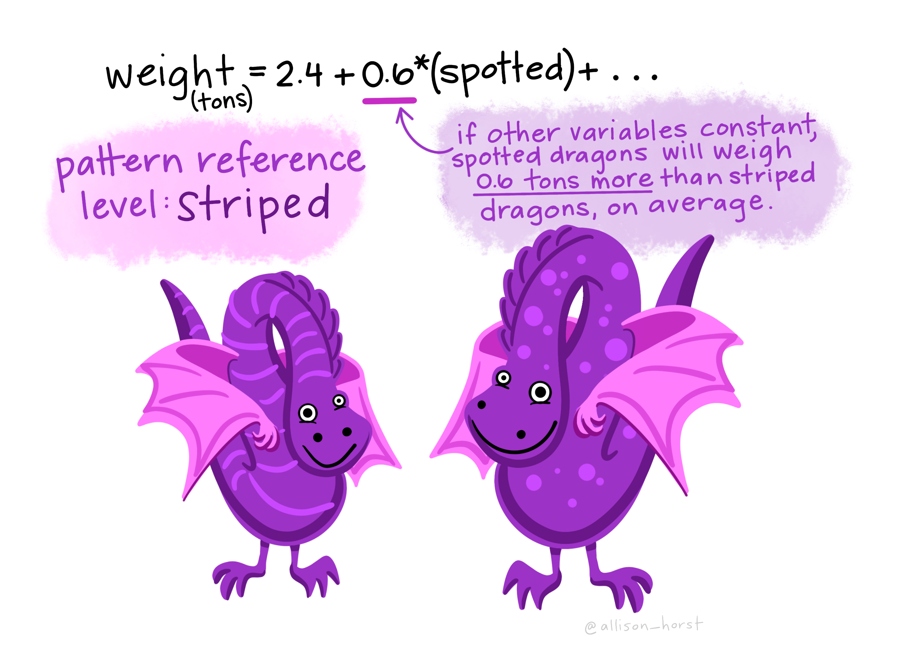

Reproducible geographical information Systems and Science
What led me here?
- Lecture with Carl Howe
2017, 90% of the data in the world today has been created in the last two years alone, at 2.5 quintillion bytes of data a day! - IBM

Who has manipulated our boundary data?
Redlining
- 1930s – American Home Owner’s Loan Corporation – prevent missed payments…residential security maps based on race
- People abandon redlined areas
- Can’t refinance
- Less property tax for services

Design and output
Part 1: GIS tools…
You need calculate the average percent of science students (in all) grades per county meeting the required standards and produce a map to show where the Country averages are above or below the State of Washington average.




Source: Allison Horst
Conclusion
Lead by example
Tools become the norm
Respond to industry requirements